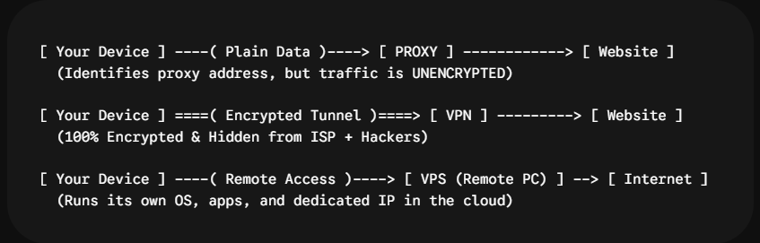

The Privacy Trio: Proxies, VPNs, and VPS
Imagine sending a letter in the mail, but you don’t want anyone—not your neighbors, not the post office, and not the recipient—to track where you live or read what’s inside.
How would you do it?
- You could pay a middleman to drop off the letter for you (Proxy).
- You could lock the letter inside an unbreakable, opaque metal box that only the recipient can open (VPN).
- Or you could rent a private, secure apartment in another country and run your mail business entirely from there (VPS).
In the world of cybersecurity, Proxies, VPNs, and Virtual Private Servers (VPS) are three distinct tools designed to protect your identity, bypass restrictions, and give you control over your online presence. Here is everything you need to know in plain English.
1. Quick Comparison: What Are They & What Do They Do?

A. Proxy (The Middleman)
- What it is: An intermediate server that sits between your browser and the internet.
- How it works: When you visit a site, your request goes to the proxy first. The proxy fetches the webpage for you and passes it back, hiding your real home IP address.
- Best used for: Quick, lightweight tasks like bypassing simple geo-blocks or web filters at school or work.
- The Drawback: Most standard proxies do not encrypt your internet traffic. Your Internet Service Provider (ISP) and network admins can still see what you are doing.
B. VPN (The Encrypted Shield)
- What it is: Virtual Private Network. It acts like a proxy, but adds a powerful layer of end-to-end encryption.
- How it works: A VPN creates an encrypted “tunnel” between your device and a secure server. All data passing through this tunnel is completely unreadable to outsiders, including hackers on public Wi-Fi and your ISP.
- Best used for: Everyday privacy, secure online banking, public Wi-Fi protection, and streaming region-locked content.
- The Drawback: Can slightly reduce your internet speed depending on server distance.
C. VPS (Your Private Computer in the Cloud)
- What it is: Virtual Private Server. A full virtual computer hosted in a data center that you can control remotely.
- How it works: Instead of just rerouting traffic, a VPS gives you an entire operating system (Linux or Windows) running 24/7 with its own dedicated IP address, CPU, and RAM.
- Best used for: Hosting websites, running trading bots, hosting private game servers, or setting up your own custom VPN server.
- The Drawback: Requires technical knowledge to configure and maintain securely.
2. Why Should a Non-Technical Person Care?
If you aren’t a hacker or an IT engineer, why do these tools matter in everyday life?
- Public Wi-Fi Defense: Unencrypted coffee shop or airport Wi-Fi networks allow hackers on the same network to intercept unencrypted logins, session cookies, and personal data. A VPN encrypts 100% of your mobile and laptop traffic.
- Stopping ISP & Ad Tracking: Your Internet Service Provider logs every domain name you visit and sells that aggregated browsing data to advertising networks. A VPN hides your browsing habits from your ISP.
- Bypassing Censorship & Regional Restrictions: Whether traveling abroad and trying to access home streaming subscriptions or bypassing local content blocks, Proxies and VPNs let you select your digital location.
- 24/7 Cloud Tasks: If you need an application to stay online 24/7 without keeping your home laptop powered on, a VPS runs continuously in the cloud for dollars a month.
3. Top VPN Providers Compared
Not all VPNs are created equal. Free, untrusted VPN apps often log and sell your browsing data. Below is a breakdown of the most reliable and audited commercial VPN providers:
| Provider | Best for | Free plan available | Monthly price range | Key advantages | Disadvantages |
|---|---|---|---|---|---|
| Proton VPN | Privacy & Free Tier | Yes (Unlimited data, free servers in several countries) | Free – ~$4.99/mo |
|
|
| Mullvad VPN | Anonymity & Simplicity | No | Flat €5/mo (~$5.50/mo) |
|
|
| NordVPN | All-Around Security & Speed | No (30-day money-back guarantee) | ~$3.09 – $12.99/mo |
|
|
| ExpressVPN | Streaming & Ease of Use | No (30-day money-back guarantee) | ~$6.67 – $12.95/mo |
|
|
| Surfshark | Unlimited Devices & Families | No (30-day money-back guarantee) | ~$2.19 – $15.45/mo |
|
|
4. How to Choose the Right Tool for You
Use this quick decision checklist:
- Use a Proxy if: You just need to quickly unblock a simple website on a school/work computer and don’t care about encryption or security.
- Use a VPN if: You want hassle-free, one-click privacy for your phone and laptop when browsing, using public Wi-Fi, or streaming.
- Use a VPS if: You are building a website, running scripts/bots 24/7, or want full administrative control over a cloud server.